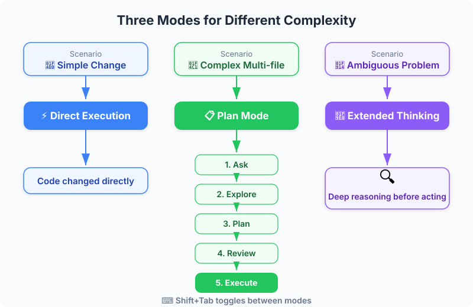

Figure: Thinking modes spectrum — from standard to ultrathink.
| Item | Details |
|---|---|
| Exam Coverage | D1 — Agentic Coding Fundamentals (22%), D3 — Effective Claude Code Usage (30%) |
| Task Statements | 3.4 ★★★ (plan mode vs direct), 3.5 ★★★ (iterative refinement), 1.1 ★ (agentic loops) |
| Exam Scenarios | S2 (Code Gen), S4 (Developer Productivity) |
| Course Source | claude-code-in-action / 02-getting-started / Lesson 08 (video + text) |
Figure: Thinking modes spectrum — from standard to ultrathink.
Claude Code has two power features beyond basic chat: Planning Mode (for complex multi-file tasks) and Thinking Modes (for deep reasoning on hard problems). PMs should understand these because they affect developer productivity, token costs, and the types of tasks that can be reliably automated. The iterative refinement workflow — ask, implement, review, feedback, refine — is how teams actually use Claude Code day-to-day.
| Concept | Business Analogy |
|---|---|
| Direct execution | Quick Slack message to fix a typo — no meeting needed |
| Planning Mode | Project kickoff meeting before a multi-week sprint — align scope before building |
| Thinking modes | Giving the strategy team an extra week for deep analysis on a complex market decision |
| Iterative refinement | Design sprint — show prototype, get stakeholder feedback, iterate, ship |
| Screenshot input | Annotated mockup from a designer — "change this specific button" with a red circle around it |
| Planning + Thinking | Annual planning + deep-dive research — both scope and depth |

Figure: Planning mode execution flow — explore, plan, review, execute.

| Task Type | Recommended Mode | Token Cost | Developer Time |
|---|---|---|---|
| Fix a typo, add a log statement | Direct execution | Low | Minutes |
| Implement a new API endpoint | Direct or Planning | Medium | 10-30 min |
| Refactor authentication across 10 files | Planning Mode | High | 30-60 min |
| Design optimal caching algorithm | Thinking Mode (ultrathink) | High | 15-30 min |
| Full-stack feature across multiple modules | Planning + Thinking | Highest | 1-2 hours |
🎬 Instructor insight from the video
The instructor notes that "both features consume additional tokens, so there's a cost consideration." This is the key PM insight: more powerful modes produce better results on complex tasks but cost more. The goal is proportionate usage — match the tool to the task.
Your team is planning a sprint with a mix of task complexities:
| Ticket | Complexity | Recommended Claude Code Mode | Rationale |
|---|---|---|---|
| Fix button color on settings page | Low | Direct execution | Single file, clear change |
| Add dark mode to the entire app | High (breadth) | Planning Mode | Touches CSS, components, state management across many files |
| Optimize database query performance | High (depth) | Thinking Mode (ultrathink) | Requires deep analysis of query patterns and indexing strategies |
| Build new billing module from scratch | High (both) | Planning Mode + Thinking | New architecture (breadth) with complex business logic (depth) |
💡 PM Decision Rule
When estimating sprint velocity with Claude Code, simple tasks get 2-3x speedup from direct execution. Complex tasks get 1.5-2x speedup from Planning Mode but consume more tokens. Factor this into cost projections.
This is the workflow you will see developers using daily:
PM provides requirement
│
▼
Developer asks Claude ──→ Claude implements ──→ Developer reviews
▲ │
│ ▼
└────── Developer provides feedback ◄── Needs changes?
(screenshot + description) │
▼ (No)
Ship / PR
What this means for PMs:
- Feedback cycles are faster (minutes, not days)
- Visual feedback (screenshots) is now a first-class communication method
- PMs can participate by providing screenshots of desired UI states
- More iterations = better result, but each iteration has a token cost
Your engineering team is adopting Claude Code. The CTO asks you to estimate the impact on sprint velocity. Based on this lesson, which answer is most nuanced?
Your team's Claude Code token usage has doubled this month. Investigation reveals developers are using "ultrathink" for most tasks. What is the appropriate PM response?
Your design team wants to use Claude Code to accelerate UI implementation. They ask: "Can we just send screenshots to the developers for Claude to implement?" Based on this lesson, what is the correct answer?